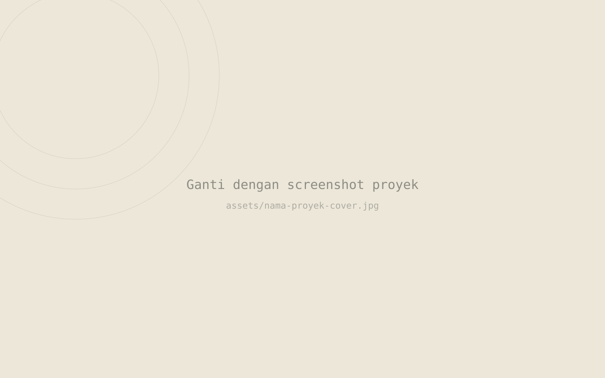

[Kategori]
[Nama Proyek]
[Satu-dua kalimat ringkas tentang apa proyek ini dan siapa penggunanya.]
PERAN
[mis. Full-stack Developer]
PERIODE
[mis. 2026]
JENIS
[mis. Proyek klien / kampus / pribadi]
TIM
[mis. Solo / 3 orang]

Masalah
[Kondisi atau masalah sebelum proyek ini dibuat.]
Pendekatan
[Ringkasan pendekatan dan keputusan teknis utama.]
- 01 [Langkah atau keputusan penting pertama.]
- 02 [Langkah atau keputusan penting kedua.]
- 03 [Langkah atau keputusan penting ketiga.]
Hasil
[Hasil akhir proyek ini — jujur dan spesifik, bukan klaim generik.]
Yang saya pelajari
[Satu pelajaran nyata dari mengerjakan proyek ini.]